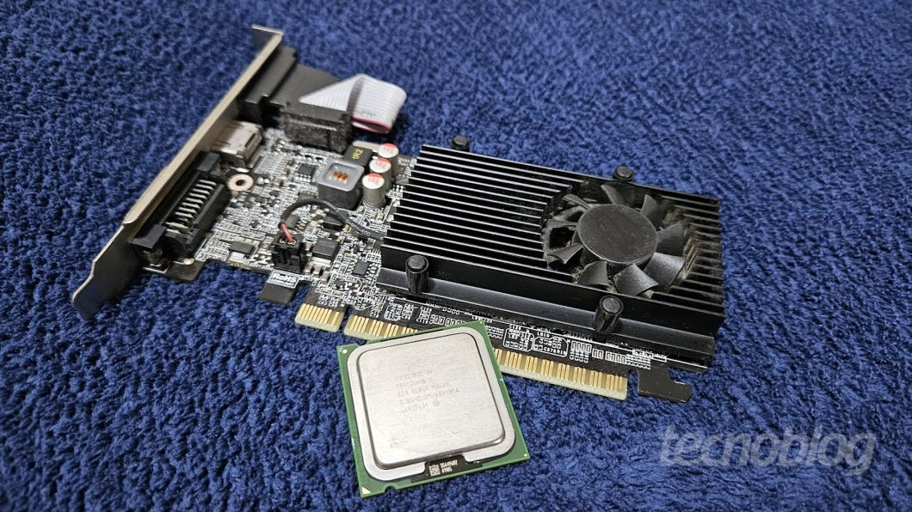
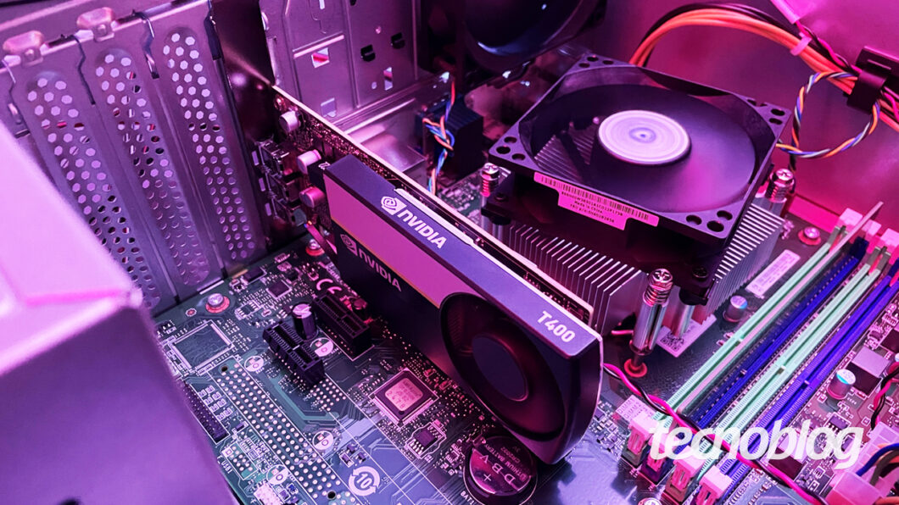
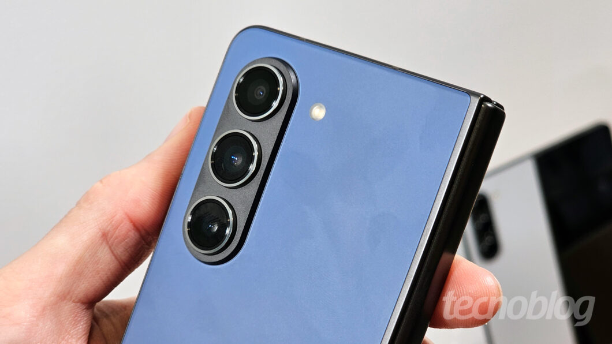
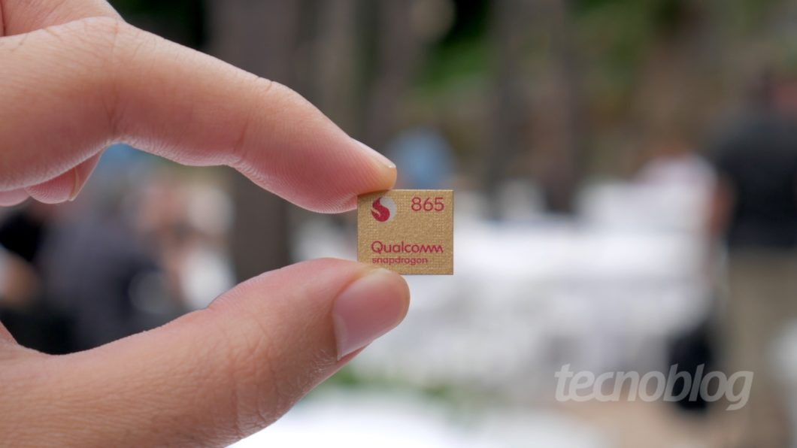

CPUs, GPUs e NPUs são tipos de processadores usados em eletrônicos de consumo, como celulares; entenda quais são as principais arquiteturas e demais atributos destes componentes
Processadores servem para controlar funções e executar operações em smartphones, PCs, câmeras e outros eletrônicos. Chips especializados, como GPUs e NPUs, podem realizar cálculos, processar gráficos, treinar inteligências artificiais, entre outras tarefas, enquanto uma CPU é um processador de uso geral.
Os processadores são definidos por suas propriedades, incluindo litografia, quantidade de núcleos, velocidade do clock, arquitetura e conjunto de instruções. A seguir, entenda mais sobre os principais tipos de processadores presentes em eletrônicos de consumo, os atributos em comum e suas respectivas funções.
CPU (Unidade Central de Processamento), GPU (Unidade de Processamento Gráfico), NPU (Unidade de Processamento Neural) e ISP (Processador de Sinal de Imagem) são alguns dos principais tipos de processadores encontrados em celulares, câmeras e computadores.
Para que serve a Unidade Central de Processamento (CPU)? A CPU serve para executar instruções gerais de programas, funcionando como o “cérebro” do computador. Ela é dividida em três componentes principais: a Unidade Lógica Aritmética (ULA), a Unidade de Controle (UC) e os Registradores. Por ser a unidade central de processamento, é muitas vezes chamada apenas de “processador”.
A GPU serve para processar gráficos de forma eficiente, sendo fundamental para renderização de jogos, edição de vídeo e outras aplicações visuais. Baseia-se no processamento paralelo para executar múltiplas operações gráficas simultaneamente e pode ter centenas ou milhares de núcleos de processamento independentes.
A NPU serve para acelerar tarefas relacionadas à inteligência artificial, como deep learning, redes neurais e visão computacional em celulares e computadores. Também chamada de Unidade de Processamento Inteligente (IPU), pode melhorar a qualidade de imagens em Smart TVs por meio de uma técnica conhecida como upscaling.
Um DSP serve para processar sinais digitais, como áudio e vídeo, em tempo real. É útil em aplicações como codificação e decodificação de vídeos de alta resolução, cancelamento ativo de ruído (ANC) em fones de ouvido e filtros de melhoria de qualidade de imagem.
Um ISP serve para processar as imagens capturadas por câmeras. Trabalha em conjunto com outros processadores do SoC (System-on-a-chip), como o DSP e a CPU, para gerenciar as cores, reduzir o ruído e melhorar a nitidez das cenas fotografadas e filmadas pelo celular, notebook, câmera digital e outros eletrônicos com sensores de imagem.
Litografia é a tecnologia de fabricação usada na produção de um semicondutor, como um processador de silício. Ela afeta diretamente fatores como a densidade de transistores, a velocidade de processamento, a eficiência energética e o gerenciamento de calor do chip.
A litografia de um processador é expressa em nanômetros (nm). Quanto menor o valor em nanômetros, maior tende a ser o número de transistores dentro do processador em uma mesma área física.
Transistores são componentes semicondutores, normalmente feitos de silício, que controlam a corrente elétrica. Em um processador, transistores agem como interruptores, controlando o fluxo de eletricidade e, consequentemente, a execução das instruções e dos cálculos.
A arquitetura de um processador se refere ao projeto do chip e à forma como ele processa os dados. Há dois tipos de arquiteturas: a von Neumann, mais comum em processadores modernos, e a Harvard.
O conjunto de instruções se refere às operações que o processador é capaz de executar. Pode ser do tipo RISC (Reduced Instruction Set Computer), que se baseia em instruções simplificadas e em menor quantidade, ou CISC (Complex Instruction Set Computing), que traz instruções mais complexas para aplicações específicas.
O conjunto de instruções é uma parte da arquitetura que especifica quais operações um processador pode executar. Uma instrução pode ser uma operação de soma, subtração, multiplicação e divisão, ou um comando para carregar e armazenar dados.
A arquitetura do conjunto de instruções (ISA) serve como ponte entre o hardware e o software do computador. Um programa deve ser escrito de acordo com as especificações da ISA para que seja executado de maneira nativa, com a maior eficiência possível, sem necessidade de técnicas como emulação ou virtualização.
A microarquitetura é a forma como a ISA é implantada no processador. Chips diferentes podem ter a mesma ISA e entender o mesmo conjunto de instruções. No entanto, se tiverem microarquiteturas diferentes, eles executarão as instruções de maneiras diferentes, o que interferirá no desempenho e na eficiência energética.